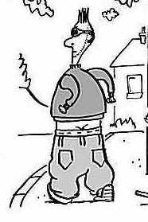

| MARSHALL MCLUHAN |
Understanding Media |
12/Clothing
Our Extended Skin
| Clothing enhances sexual response by conserving
energy? Both sex and food excite endorphins. Any study in depth is a study in breadth. |
Economists
have estimated that an unclad society eats 40 per cent more than one in Western attire.
Clothing as an extension of our skin helps to store and to channel energy, so that if the
Westerner needs less food, he may also demand more sex. Yet neither clothing nor sex can be understood as
separate isolated factors, and many sociologists have noted that sex can become a
compensation for crowded living. Privacy, like individualism, is unknown in tribal
societies, a fact that Westerners need to keep in mind when estimating the attractions of
our way of life to nonliterate peoples. |
| Did the necktie or cravat begin as a scarf (to
hold in heat) or knotted kerchief (for protection against the sun), or a fashion statement
expressing social status?
Visual bias fosters uniformity because of its emphasis on continuous space and order,
i.e. Euclidian space. Tactile space is discontinuous and resonates from within. |
Clothing, as
an extension of the skin, can be seen both as a heat-control mechanism and as a means of
defining the self socially. In these respects, clothing and housing are near twins, though
clothing is both nearer and elder; for housing extends the inner heat-control mechanisms
of our organism, while clothing is a more direct extension of the outer surface of the
body. Today Europeans have begun to dress for the eye, American-style, just at the moment
when Americans have begun to abandon their traditional visual style. The media analyst
knows why these opposite styles suddenly transfer their locations. The European, since the
Second War, has begun to stress visual values; his economy, not coincidentally, now
supports a large amount of uniform consumer goods. Americans, on the other hand, have
begun to rebel against uniform consumer values for the first time. In cars, in clothes, in
paperback books; in beards, babies, and beehive hairdos, the American has declared for
stress on touch, on participation, involvement, and sculptural values. America, once the land of an abstractly visual order, is
profoundly "in touch" again with European traditions of food and life and art.
What was an avant-garde program for the 1920 expatriates is now the teenagers'
norm. |
|
Pioneer: French pionnier, from Old French peonier, foot
soldier, from peon, from Medieval Latin pedo, pedon-, from Late
Latin, one who has broad feet, from Latin pês, ped-, foot. |
The
Europeans, however, underwent a sort of consumer revolution at the end of the eighteenth
century. When industrialism was a novelty, it became fashionable among the upper classes
to abandon rich, courtly attire in favor of simpler materials. That was the time when men
first donned the trousers of the common foot soldier (or pioneer, the original
French usage), but it was done at that time as a kind of brash gesture of social
"integration." Up until then, the feudal system had inclined the upper classes
to dress as they spoke, in a courtly style quite removed from that of ordinary people.
Dress and speech were accorded a degree of splendor and richness of texture that universal literacy and mass production were
eventually to eliminate completely. The sewing machine, for example, created the long
straight line in clothes, as much as the linotype flattened the human vocal style. |
|
|
A recent ad
for C-E-I-R Computer Services pictured a plain cotton dress and the headline: "Why
does Mrs. 'K' dress that way? "—referring to the wife of Nikita Khrushchev. Some
of the copy of this very ingenious ad continued: "It is an icon. To its own
underprivileged population and to the uncommitted of the East and South, it says: 'We are
thrif-ty, simple, hon-est; peace-ful, home-y, go-od.' To the free nations of the West it
says: 'We will bury you.'" |
| Clothing talks! |
This is
precisely the message that the new simple clothing of our forefathers had for the feudal
classes at the time of the French Revolution. Clothing was then a nonverbal manifesto of
political upset. |

I'm declaring my right to be a jerk and a loudmouthed slob. Also,
I don't have to study in school. |
Today in
America there is a revolutionary attitude expressed as much in our attire as in our patios
and small cars. For a decade and more, women's dress and hair styles have abandoned visual
for iconic—or sculptural and tactual—stress. Like toreador pants and gaiter
stockings, the beehive hairdo is also iconic and sensuously inclusive, rather than
abstractly visual. In a word, the American woman for the first time presents herself as a
person to be touched and handled, not just to be looked at. While the Russians are groping
vaguely toward visual consumer values, North Americans are frolicking amidst newly
discovered tactile, sculptural spaces in cars, clothes, and housing. For this reason, it
is relatively easy for us now to recognize clothing as an extension of the skin. In the
age of the bikini and of skin-diving, we begin to understand "the castle of our
skin" as a space and world of its own. Gone
are the thrills of strip-tease. Nudity could be naughty excitement only for a visual
culture that had divorced itself from the audile-tactile values of less abstract
societies. As late as 1930, four-letter words made visual on the printed page seemed
portentous. Words that most people used every hour of the day became as frantic as nudity,
when printed. Most "four-letter words" are heavy with tactile-involving stress.
For this reason they seem earthy and vigorous to visual man. So it is with nudity. To
backward cultures still embedded in the full gamut of sense-life, not yet abstracted by
literacy and industrial visual order, nudity is merely pathetic. The Kinsey Report on the
sex life of the male expressed bafflement that peasants and backward peoples did not
relish marital or boudoir nudity. Khrushchev did not enjoy the can-can dance provided for
his entertainment in Hollywood. Naturally not. That sort of mime of sense involvement is
meaningful only to long-literate societies. Backward peoples approach nudity, if at all,
with the attitude we have come to expect from our painters and sculptors—the attitude
made up of all the senses at once. To a person using the whole sensorium. nudity is the
richest possible expression of structural form. But to the highly visual and lopsided
sensibility of industrial societies, the sudden confrontation with tactile flesh is heady
music, indeed. |
|
There is a
movement toward a new equilibrium today, as we become aware of the preference for coarse,
heavy textures and sculptural shapes in dress. There is, also, the ritualistic exposure of
the body indoors and out-of-doors. Psychologists have long taught us that much of our
hearing takes place through the skin itself. After centuries of being fully clad and of
being contained in uniform visual space, the electric age ushers us into a world in which
we live and breathe and listen with the entire epidermis. Of course, there is much zest of
novelty in this cult, and the eventual equilibrium among the senses will slough off a good
deal of the new ritual, both in clothing and in housing. Meantime, in both new attire and
new dwellings, our unified sensibility cavorts amidst a wide range of awareness of
materials and colors which makes ours one of the greatest ages of music, poetry, painting,
and architecture alike. |
|
|
|